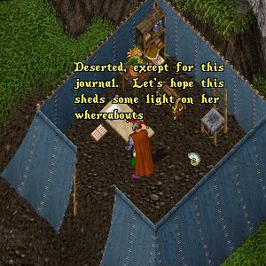
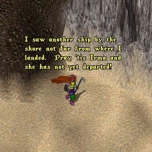
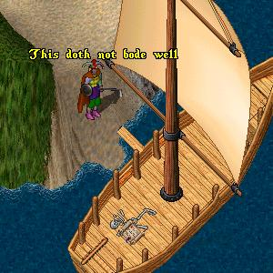

Episode 144: The End or At Least The Beginning of the End. (Part 3). In the last episode, ImaNewbie has found what he hopes is the tent where IrmaDufus has been living alone since he last saw her. Trembling with anticipation, Ima enters the tent...
 |
ImaNewbie opens the journal and begins to read...
Journal of IrmaDufus July 5th. I have arrived in a place that seems to have all I require to live out the rest of my life in peace. There is an abundant supply of fresh water and animals to hunt, and it appears that few if any monsters inhabit this area. Skipping forward he stops at the following entry. December 23rd. Well it is hard to believe that I have been here for over five months. For the first time since my arrival I find I am lonely for company. It probably has to do with the fact that Christmas is near and it seems that at this time of year friends and loved ones are most dearly missed. ImaNewbie continues to read. The diary contains mostly a mundane recounting of Irma's day to day existence in her chosen place of exile. But then he notices a change in the style of writing. March 8th. The birds are returning and the suns rays once again begin to have warmth in them. Spring is arriving and with it comes a strange new feeling. I am starting to feel a renewed sense of hope that I might be able to return to Britannia and once again take back control of my life. I even find myself thinking about that scoundrel ImaNewbie and how I miss his embrace. I wonder if he has changed his wandering ways. ImaNewbie's reads rapidly, his heart pounding. March 23rd. Well, I have made my decision. I will begin to pack up my belongings in preparation for my return to Britannia. I intend to search until I find ImaNewbie and give him one more chance to commit himself to me, body and soul. As soon as the spring rains have ended I will head south west for the small harbour where I left my boat. I hope it is still there and in good repair. March 27th. Well the rains have subsided and I have decided to leave today. To whoever reads this diary, feel free to help yourself to anything left behind that you find useful. Sincerely, Oh My God! Can it be true? Irma is alive, and wants me back! I must find her! |
Unable to contain his excitement, ImaNewbie
rushes out and heads southwest down to
the beach where he remembers seeing
another ship on his arrival.
 |
Sure enough, as he approaches the beach the
mast of another vessel is visible, but as he gets
closer he begins to feel that all is not right.
 |
Boarding the vessel ImaNewbie approaches the skeleton, reaches down and takes the scroll. Could these weathered bones and old scroll be all that remains of his beloved Irma? Toon' in next week as the amazing story continues.